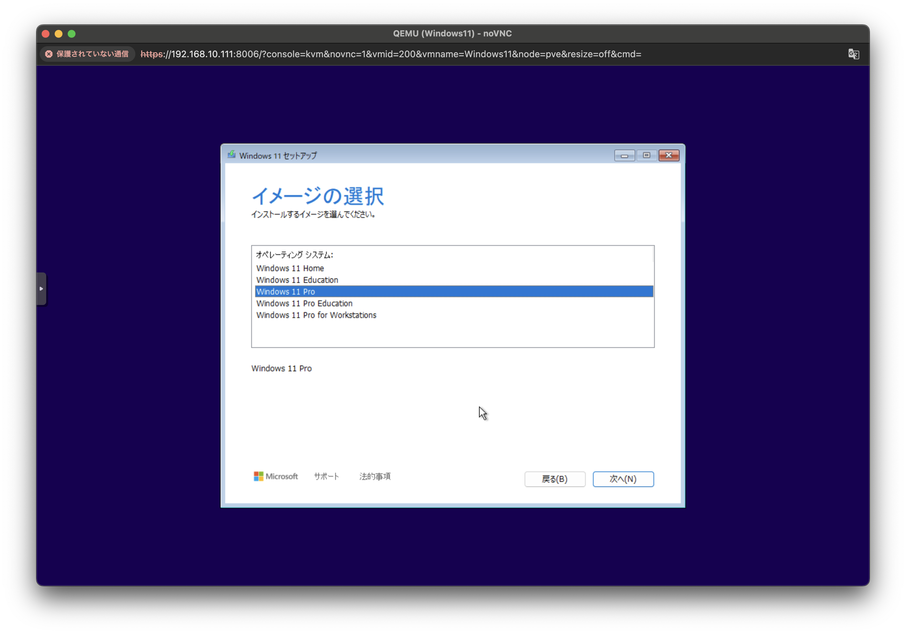
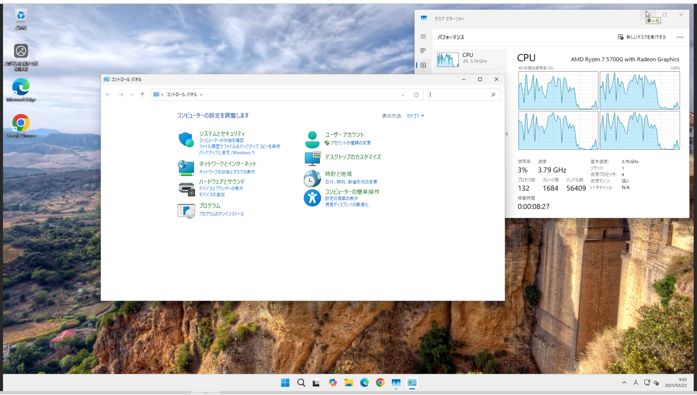

環境
- Promox 8.3.0
- kernel: 6.8.12-8-pve
- pve-manager: 8.3.4
- Windows11 24H2
- virtio-win-0.1.266
準備
Windows11
virtio（vitrio-win-0.1.266.iso）
上記は両方ともPromoxにISOとしてアップロードする
Windows11のVM構築
ISOイメージはWindows11を選択する
ゲストOSを"Microsoft Windows"にし、バージョンを"11/2022/2025"にする
その下にある"VirtIOドライバ用の追加ドライブを追加"にチェックを入れる
ISOイメージを選択する（“vitrio-win-0.1.266.iso”）
“EFIストレージ"を保存する場所を選択する
“Qemuエージェント"にチェックを入れる
“TPM追加"にチェックを入れる
“TPMストレージ"を保存する場所を選択する
“バージョン"は"v2.0"を選択する
ディスクは100GBくらい確保しておく

CPUの項目では"種別"を"host"にする

メモリは16GBにする
ネットワークはそのまま

確認に画面になり、問題なければ"完了"を押す

Windows11インストール
設定を進めていきます

プロダクトキーは後で入力するので"プロダクトキーがありません"を選択する

“Windows 11 Pro"を選択する


“Windows 11 をインストールする場所の選択"の画面になったら、上のメニューの"Load Driver"か下の"ハードウェアが表示されませんか？ドライバーを読み込み、ハードウェアにアクセスします。“をクリックする
画面が変わったら"参照"をクリックし、“virtio-win-0.1.226"を選択します

“amd64”>“w11"を選択し、OKをクリックします “VirtIO SCSI pass-through controller"を選択して、“インストール"をクリックします するとディスクが表示されます
続けて他のドライバーもインストールします
 上のメニューの"Load Driver"をクリックします（“適用される通知とライセンス条項"が表示されたら"同意する"をクリックします）
上のメニューの"Load Driver"をクリックします（“適用される通知とライセンス条項"が表示されたら"同意する"をクリックします）
 “参照"をクリックし、“virtio-win-0.1.226"を選択します
“NetKVM”>“w11”>“amd64"を選択し、OKをクリックします
“VirtIO Ethernet Adapter"を選択して"インストール"をクリックします
“参照"をクリックし、“virtio-win-0.1.226"を選択します
“NetKVM”>“w11”>“amd64"を選択し、OKをクリックします
“VirtIO Ethernet Adapter"を選択して"インストール"をクリックします


同じ手順で
“Balloon”>“w11”>“amd64"を選択し、OKをクリックします
“VirtIO Balloon Driver"を選択して"インストール"をクリックします

次へを押します
“インストール準備完了"が表示されたら"インストール"をクリックします
インストールが始まります

ここから先は通常のWindows11と同じようにセットアップしていきます

ここまででWindows11のインストールは完了です
Hyper-Vのインストール
Windows11のインストールが終わったらHyper-Vをインストールしていきます
コントロールパネルを開き、“プログラム"をクリックします 
“Windowsの機能の有効化または無効化"をクリックし、“Hyper-V"にチェックを入れ、“OK"をクリックします
再起動をします


タスクバーのWindowsマークをクリックして"すべて”>“Windowsツール"をクリックします

“Hyper-Vマネージャ"を右クリックして"ショートカットの作成"をします（デスクトップに作成しておきます）


ダブルクリックで開けます

qemu-guest-agentをインストールする
virtio-win-0.1.266のドライブ直下に下記の2つのファイルがあるのでインストールします
- virtio-win-gt-x64.msi
- virtio-win-guest-tools.exe
上記をインストールすると、Proxmoxの管理コンソールからコントロールやIPアドレスがわかるようになります